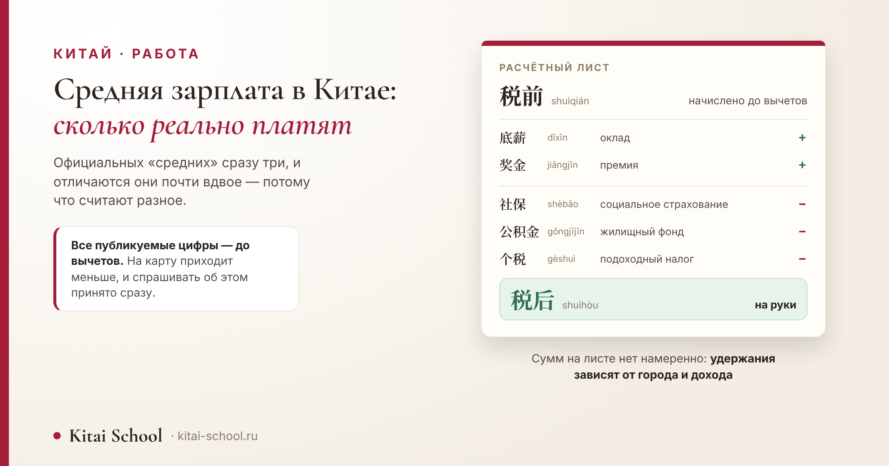
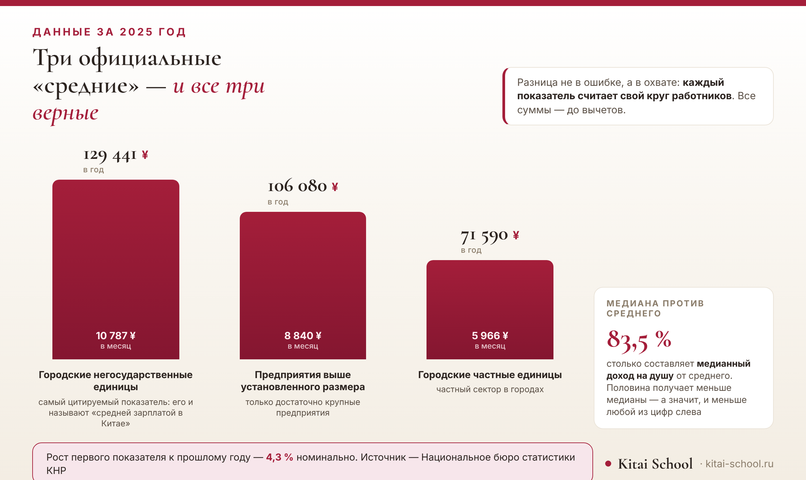

Китай · работа
Средняя зарплата в Китае: сколько реально платят и насколько это зависит от города


Если вы уже искали ответ, то видели пять разных цифр и ни одного объяснения, почему они не сходятся. Объяснение простое, и с него стоит начать: официальных «средних» в Китае не одна, а несколько, и считают они разные круги работников. Дальше разберём каждую, посмотрим, насколько средняя расходится с тем, что получает большинство, и закончим словами, без которых разговор о зарплате по-китайски не складывается.
За 2025 год: 129 441 юань в год в городских негосударственных единицах, 106 080 на крупных предприятиях, 71 590 в городском частном секторе. Все суммы — до вычетов. Медианный доход на душу составляет 83,5 % от среднего: половина получает меньше. В Пекине и Шанхае порядок примерно вдвое выше общенационального.
Короткий ответ: сразу три «средние»
Начну с цифр, а объяснение — сразу под таблицей.
| Показатель | В год | Примерно в месяц | Кого считает |
|---|---|---|---|
| Городские негосударственные единицы | 129 441 ¥ | 10 787 ¥ | самый цитируемый показатель: именно его обычно и называют средней зарплатой в Китае |
| Предприятия выше установленного статистического размера | 106 080 ¥ | 8 840 ¥ | только достаточно крупные предприятия |
| Городские частные единицы | 71 590 ¥ | 5 966 ¥ | частный сектор в городах |
Между крайними строками разница почти вдвое — и это не разные источники, а один и тот же. Просто показатели охватывают разный круг работников, и каждый из них по-своему верен.
Первая строка — та самая цифра, которую обычно и называют средней зарплатой в Китае. Рост к прошлому году — 4,3 % номинально.
Вторая и третья строки нужны для сравнения. Они показывают, что цифра зависит не от источника, а от того, кого в неё включили: стоит сузить круг до крупных предприятий или расширить до всего городского частного сектора — и «средняя по стране» сдвигается на десятки тысяч юаней в год.
Месячные суммы в третьей колонке — простое деление на двенадцать, а не отдельный показатель. Реальные выплаты по месяцам распределяются неровно: премии и переменная часть приходят не каждый месяц.
Почему одна цифра не отвечает на вопрос
Теперь то, из-за чего цифры в поиске не сходятся между собой.
Первое: разный охват. Статистика считает работников организаций с пятью и более сотрудниками в городах. Индивидуальные предприниматели и самозанятые в неё не входят — а это заметная часть занятых.
Второе: суммы приводятся до вычетов. На счёт приходит меньше: удерживают взносы и подоходный налог. Разговор о зарплате в Китае почти всегда начинается с уточнения, о какой сумме речь — об этом ниже, в разделе про слова.
Третье: это средняя, а не типичная. Среднее поднимают высокие доходы, и большинство получает меньше. Насколько — в следующем разделе.
И отдельно — цифры с сайтов вакансий. Их тоже называют средними, но считают они совсем другое: не всех работников страны, а тех, кого ищут работодатели через конкретную площадку. Вакансия почти всегда называет вилку, а не одно число, и верхняя граница в ней — предложение для лучшего кандидата, а не типичная выплата.
Поэтому зарплатные обзоры кадровых сайтов и государственная статистика расходятся закономерно, а не по ошибке. Первые показывают рынок найма прямо сейчас, вторые — всех, кто уже работает, включая тех, кто сидит на одном месте десять лет и работу не ищет.
Четвёртое: год публикации. Данные за год выходят с задержкой, и в поиске запросто соседствуют цифры за разные годы. Всегда смотрите, к какому году относится число.
Отсюда правило, которое экономит время: прежде чем сравнивать две цифры, посмотрите, что именно каждая из них считает. Чаще всего выясняется, что сравнивать их нельзя вовсе.
Среднее и медиана: почему большинство получает меньше
Это главное, что стоит понять про любую среднюю зарплату — хоть китайскую, хоть какую.

Медианный располагаемый доход на душу населения составляет 83,5 % от среднего. Медиана — это середина: половина получает больше, половина меньше. И она заметно ниже средней.
Сразу оговорюсь, чтобы не путать показатели. Доход на душу населения и зарплата — разные вещи: первый считается на человека, включая тех, кто не работает, и учитывает не только зарплату. Я привожу его здесь только ради одного — показать разрыв между серединой и средним.
Почему так выходит. Среднее чувствительно к высоким значениям: несколько очень больших доходов тянут его вверх, а медиану — нет. Поэтому средняя зарплата почти всегда выше той, которую получает типичный работник.
Практический вывод для читателя. Увидев цифру средней зарплаты, не примеряйте её на себя как ориентир: это не та сумма, которую получает большинство. Ближе к действительности окажется медиана, а ещё ближе — цифры по вашему городу и вашей сфере.
Город решает больше, чем профессия
Разрыв между регионами в Китае больше, чем разрыв между многими профессиями внутри одного города.
В Пекине и Шанхае средняя выше общенациональной примерно вдвое. Это порядок величины, и дальше я намеренно не уточняю.
Почему не уточняю. Городские показатели публикуются по разным охватам: один город даёт цифру по негосударственным единицам, другой — по всем сразу. Эти ряды несопоставимы между собой, и поставить их в одну таблицу значило бы сравнить разное.
То же и с провинциями. Полного сопоставимого ряда за год в доступных мне публикациях нет: часть регионов отчитывается позже, методики смешаны. Таблицы по провинциям в этой статье не будет — вместо красивой картинки с цифрами, которым нельзя доверять.
Что можно сказать уверенно: разрыв между городами первого ряда и остальной страной существенный, и он не сводится к зарплате. Вместе с доходом растут и расходы, прежде всего на жильё, — и об этом стоит думать одновременно.
И ещё одно, что теряется за любой средней цифрой: сумму в договоре называет не статистика, а живой разговор — и в нём легко разойтись с собеседником на ровном месте.
Ученик готовился к собеседованию в китайскую компанию и принёс на занятие вопрос, который считал простым: как сказать, сколько он хочет получать.
Фразу он уже составил. В ней была сумма — и больше ничего. Ни 月薪 это или 年薪, ни 税前 или 税后.
А разница тут не стилистическая. Назвать годовую сумму вместо месячной — разойтись с собеседником в двенадцать раз. Не уточнить про вычеты — договориться о цифре, которой он не увидит на счёте.
Отработали три хода: назвать вилку, а не одно число; уточнить, идёт ли речь о сумме до вычетов; спросить про годовую премию отдельно, потому что её в месячную сумму не кладут.
На собеседовании всё это заняло полминуты. Но без этих полминуты он бы вёл разговор вслепую — и узнал бы настоящую цифру только с первой выплатой.
Эта история не про язык даже, а про привычку уточнять. В китайской практике сумму почти всегда проговаривают с уточнением — месячная или годовая, до вычетов или после, — и вопрос об этом никого не удивляет.
Почему я не перевожу в рубли
Вернёмся к цифрам — и к вопросу, который задают первым. Ответ на него будет не тот, которого ждут.
Пересчёта в рубли в статье нет, и это решение, а не забывчивость. Курс меняется, а статья остаётся: число, посчитанное сегодня, завтра окажется неверным, и читатель об этом не узнает.
Посчитать самому несложно: возьмите сумму в юанях и умножьте на текущий курс. Минута работы — зато цифра будет сегодняшней, а не прошлогодней.
Но главное не в этом. Сравнивать китайскую зарплату с рублёвой суммой мало что даёт: тратиться она будет в Китае и по китайским ценам.
Сумма сама по себе ничего не значит
Отсюда вытекает то, ради чего вообще стоит смотреть на эти цифры.
Зарплата имеет смысл только рядом с ценами. Одна и та же сумма в Шанхае и в небольшом городе провинции — это два разных уровня жизни, и разница заметнее, чем кажется по цифрам дохода.
Главная статья расходов, которая съедает разницу, — жильё. Именно аренда в городах первого ряда отличается от провинции сильнее всего, и именно она решает, что останется от зарплаты.
Что сколько стоит в Китае — еда, транспорт, жильё — у нас разобрано отдельно: дорого ли в Китае. Эту статью и стоит читать вместе с этой: доходы и расходы по отдельности мало о чём говорят.
Как говорят о зарплате по-китайски
Восемь слов, которые закрывают почти любой разговор о деньгах на работе.
| Слово | Чтение | Перевод | Как употребляется |
|---|---|---|---|
| 工资 | gōngzī | зарплата | общее слово, подходит почти всегда |
| 月薪 | yuèxīn | месячная зарплата | о сумме за месяц |
| 年薪 | niánxīn | годовая зарплата | о сумме за год — в вакансиях встречается часто |
| 税前 | shuìqián | до вычетов | сумма начислена, но ещё не выдана |
| 税后 | shuìhòu | после вычетов | то, что приходит на счёт |
| 底薪 | dǐxīn | оклад | постоянная часть, без премий и процентов |
| 提成 | tíchéng | процент с продаж | переменная часть у продавцов и менеджеров |
| 年终奖 | niánzhōngjiǎng | годовая премия | выплата в конце года, её размер оговаривают отдельно |
Главная пара здесь — 税前 и 税后. Все публикуемые цифры, включая те, что в таблице выше, — это 税前. На счёт приходит 税后, и разница заметная.
Вторая по важности пара — 月薪 и 年薪. В вакансиях встречается и то, и другое, и перепутать их легко: разница между месячной и годовой суммой — двенадцатикратная.
И отдельно про 年终奖. Годовая премия в месячную сумму не входит, и её размер оговаривают отдельно. Если о ней не спросили — считайте, что в разговоре осталась неназванная часть дохода.
Про обязательные взносы и социальный пакет у нас сказано в статье о работе в Китае: работа в Китае для иностранца. Там же про визу, без которой работать нельзя, и про то, какие сферы открыты иностранцам. Что до студентов, подработка при учёбе разобрана отдельно: можно ли студентам работать в Китае.
Если деньги и переговоры — ваша рабочая тема, лексика шире обычного курса собрана здесь: китайский язык для бизнеса.
Чего в статье нет намеренно
Перечислю прямо — это решения, а не пробелы.
- Нет цифр по отраслям. В доступных публикациях они расходятся почти вдвое по одной и той же отрасли, и выбрать из двух чисел наугад я не могу.
- Нет точных цифр по Пекину и Шанхаю. Городские ряды считаются по разным охватам и между собой несопоставимы.
- Нет таблицы по провинциям. Полного сопоставимого ряда за год нет.
- Нет сумм в рублях и долларах. Курс меняется быстрее, чем обновляется статья.
- Нет прогнозов. Что будет с зарплатами дальше, я не знаю, и гадать не стану.
- Нет обещаний заработка — ни иностранцам, ни тем, кто выучит язык. Язык расширяет выбор вакансий, но не назначает сумму в договоре.
И общее замечание о том, как вообще читать такие цифры. Любая средняя зарплата — это ответ на вопрос статистика, а не на ваш. Статистик спрашивает, сколько в среднем платят в стране; вы спрашиваете, сколько будут платить вам. Это разные вопросы, и первая цифра на второй не отвечает.
Что действительно помогает: смотреть вакансии в своём городе и в своей сфере, сравнивать их с местной арендой и держать в голове, что опубликованная сумма — до вычетов. Это скучнее одной красивой цифры, зато ближе к правде.
Разговор о работе и деньгах — отдельный пласт языка, и начинается он раньше, чем кажется: онлайн-курсы китайского. Оставить заявку или написать в Telegram.
Частые вопросы (FAQ)
Какая средняя зарплата в Китае?
Официальных показателей сразу три, и они отличаются почти вдвое. За 2025 год: в городских негосударственных единицах — 129 441 юань в год, на предприятиях выше установленного статистического размера — 106 080, в городских частных единицах — 71 590. Разница не в ошибке, а в охвате: каждый показатель считает свой круг работников. Все суммы — до вычетов.
Сколько это в месяц?
Если разделить годовые цифры на двенадцать, получится примерно 10 787, 8 840 и 5 966 юаней соответственно. Это арифметика, а не отдельный показатель: премии и переменная часть по месяцам распределяются неравномерно, поэтому в конкретном месяце сумма может быть и больше, и меньше.
Почему в разных источниках разные цифры?
Потому что считают разное. Один показатель охватывает только крупные предприятия, другой — частный сектор, третий — городские организации с пятью и более работниками. Добавьте к этому цифры до вычетов и после, городские показатели по разным охватам и разные годы — и получится тот самый разброс, который видно в поиске.
Какая зарплата в Пекине и Шанхае?
Заметно выше общенациональной — по порядку величины примерно вдвое. Точного числа я здесь не привожу: городские показатели публикуются по разным охватам, и цифры из разных рядов между собой несопоставимы. Если нужна конкретная цифра, смотрите публикацию по нужному городу и обязательно сверяйте, какой круг работников в неё входит.
Сколько это в рублях?
Пересчёт я намеренно не делаю: курс меняется, и число в рублях устареет быстрее, чем сама статья. Посчитать несложно самому — возьмите сумму в юанях и умножьте на текущий курс юаня. Важнее другое: сравнивать зарплату имеет смысл не с рублёвой суммой, а с местными ценами.
Сколько получают в Китае иностранцы?
Единой цифры нет, и приводить её было бы выдумкой: доход зависит от визы, сферы, города и конкретного договора. Что можно сказать точно: работать в Китае законно получится только с рабочей визой, а знание китайского заметно расширяет круг вакансий. Подробности — в нашей статье про работу в Китае.
Пусть цифра в договоре будет понятной до подписи! 加油！
Источники
- Национальное бюро статистики КНР, публикация о средних зарплатах работников городских организаций за 2025 год: 129 441 юаня в год в негосударственных единицах, 71 590 в частных, 106 080 на предприятиях выше установленного статистического размера, рост первого показателя 4,3 % номинально. Адрес публикации — stats.gov.cn, раздел пресс-релизов.
- Сайт первоисточника из рабочей среды мне недоступен — домен закрыт сетевыми настройками. Поэтому цифры сверены по нескольким независимым публикациям, которые их приводят, и совпали. Перед тем как ссылаться на них в важном разговоре, сверьтесь с самим бюро.
- Охват показателей — организации с пятью и более работниками в городах, оплата труда до вычета налогов; индивидуальные предприниматели и самозанятые не учитываются.
- Медианный располагаемый доход на душу населения — 83,5 % от среднего. Это показатель другого рода, чем зарплата, и в тексте это сказано прямо.
- Цифр по отраслям в статье нет: в доступных источниках по одной и той же отрасли приводятся значения, расходящиеся почти вдвое.
- Точных городских и провинциальных цифр нет: ряды публикуются по разным охватам и несопоставимы между собой.
- Пересчёта в рубли и доллары нет — курс меняется, и число устареет быстрее статьи.
- Три показателя прописаны в сборке страницы одним списком, из которого строятся и таблица, и столбцы на картинке. Сборка не пройдёт, если порядок величин нарушится или месячная сумма разойдётся с годовой.
- Случай с собеседованием — из занятий Kitai School; имени, города, компании и сумм не называю.